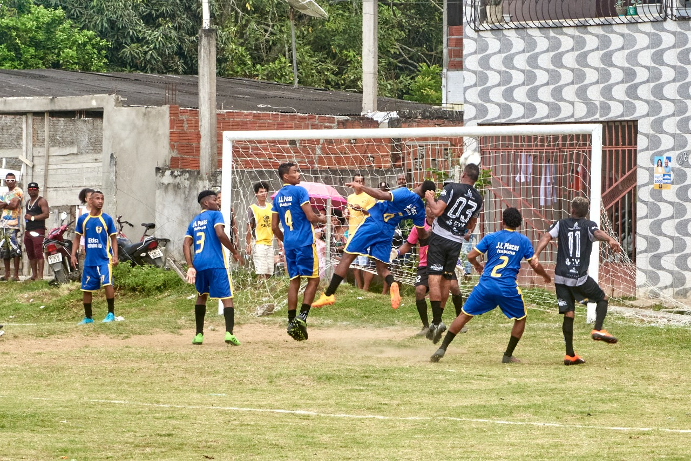
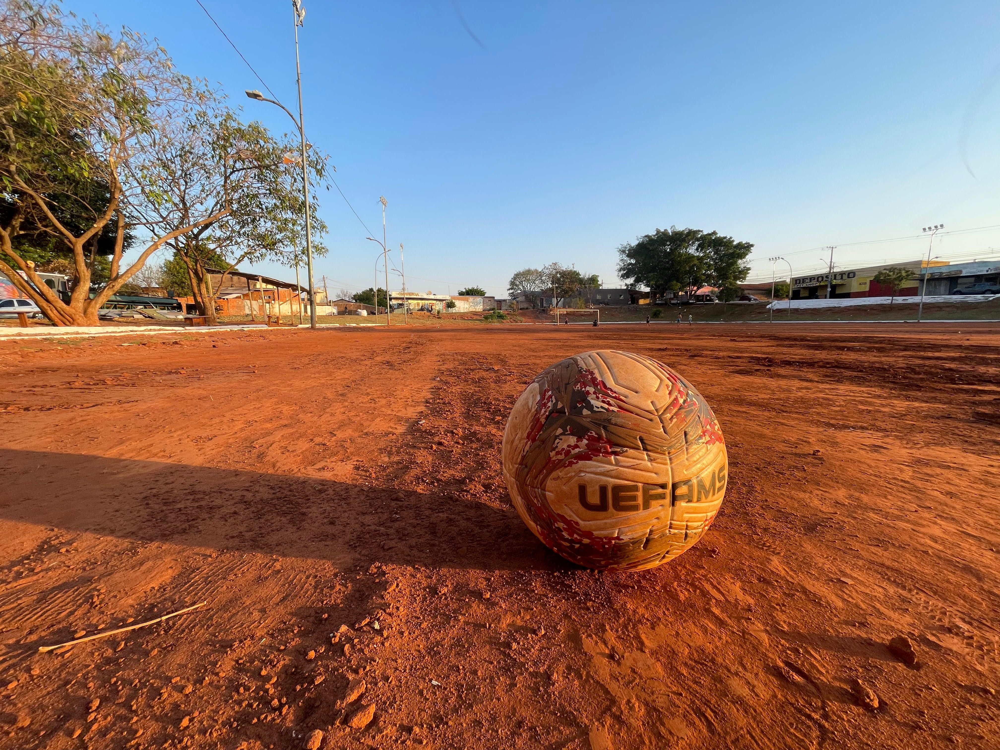
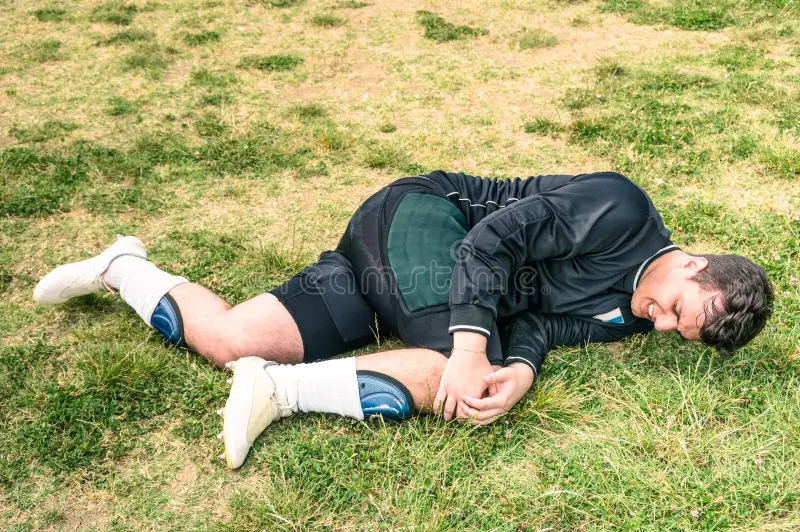

🩴 A Trava Sagrada
Quem nunca esticou o dedão no asfalto não sabe o que é a física quântica da rua. Se a bola passar por cima do chinelo, a discussão dura mais que os 90 minutos.
Na versão futebol no campo não temos esse problema.
A poeira, o asfalto, o chinelo e a paixão pura. Onde o futebol ainda respira sem filtros.

Quem nunca esticou o dedão no asfalto não sabe o que é a física quântica da rua. Se a bola passar por cima do chinelo, a discussão dura mais que os 90 minutos.
Na versão futebol no campo não temos esse problema.
O único elemento capaz de parar o jogo. Todo mundo congela, a bola vai pro braço e, assim que o para-choque passa, a pelada retoma de onde parou.

Domingo, 8h da manhã. O cheiro de terra molhada se mistura com o do churrasco. Na várzea, o uniforme brilha contra o vermelho do chão batido.

O dedão ralado no asfalto ou o roxo na canela são as medalhas da várzea. Não tem maca, massagista ou spray milagroso: o tratamento é gelo no saquinho de sacolé e um banco de reservas improvisado para continuar assistindo e cornetando o jogo.
Ajude-nos a mapear as histórias, tradições e a união do nosso território respondendo ao questionário abaixo.